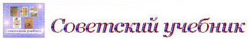

Внимание! Материалы данного ресурса не предназначены для коммерческого использования *** NB! Not for commercial distribution
Составитель и разработчик публикаций:*** Content editor and publisher:

© wkola.su 2026г.
Телеграм-канал
Паблик ВКонтакте